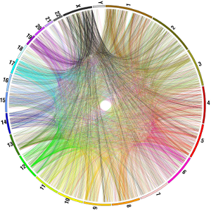

Research topics
Processed pseudogenes and Retrogenes
The human genome contains approximately twenty thousand protein coding genes. During primate evolution two mechanisms mediated a similar number of protein coding genes duplications, creating gene reservoirs and many non-coding copies, that are also called pseudogenes.
How can we reliably detect these copies in complex genomes? What is the biological significance of these copies? And what is the phenotypic impact of these copies in a individuals, populations and species perspective are some of the questions I’m interested.

The main mechanisms mediating the creation of processed pseudogenes is called retrotransposition. It uses mRNA templates and the reverse transcriptase from L1 elements to create intron-less copies of protein coding genes at random positions of a host genome. Retrotransposition of protein coding genes transcripts was active in ancestral germinative cells during primate evolution, creating a number of retrocopies (or processed pseudogenes) that are shared between humans and other primates. The retrotransposition of protein coding transcripts is still active in humans, creating many intact protein coding genes copies that are population specific.How can we reliably detect these copies in complex genomes? What is the biological significance of these copies? And what is the phenotypic impact of these copies in a individuals, populations and species perspective are some of the questions I’m interested.
Transposable Elements
Structural Variation
DNA Sequencing Technologies